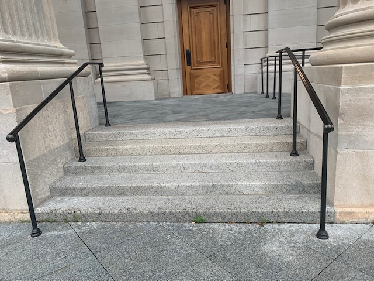

The 5 Stair
The 5 stair in front of commons is great for the more seasoned skater to practice their skate tricks. The platform above the stairs is very short but you can gather a decent amount of speed to clear it with a decent throw-in. There are also rails on the side for those comfortable with grinds but be careful not to smack your board on the pillars next to the rails.
THE 9 STAIR
I am only putting this out there because I am yet to see anyone attempt to clear this. If you ever plan on attempting these, shoot me an email and I'll bring over the snacks and drinks.
Previous page Take me there